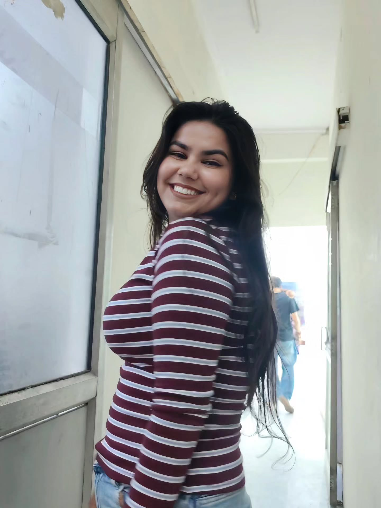
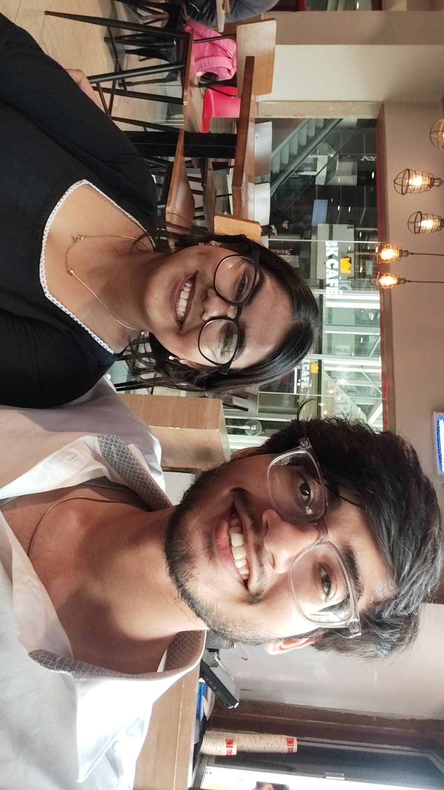
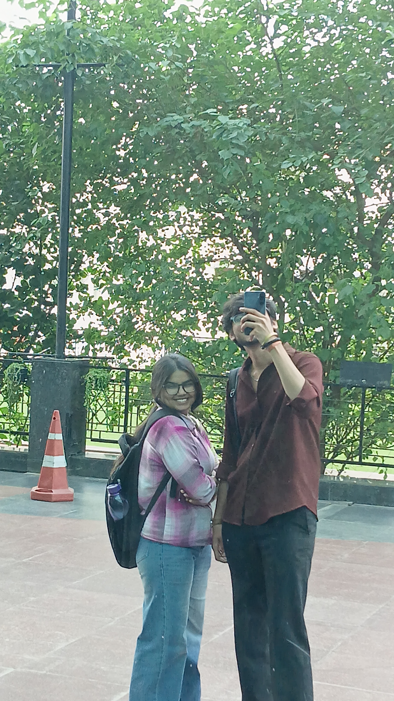
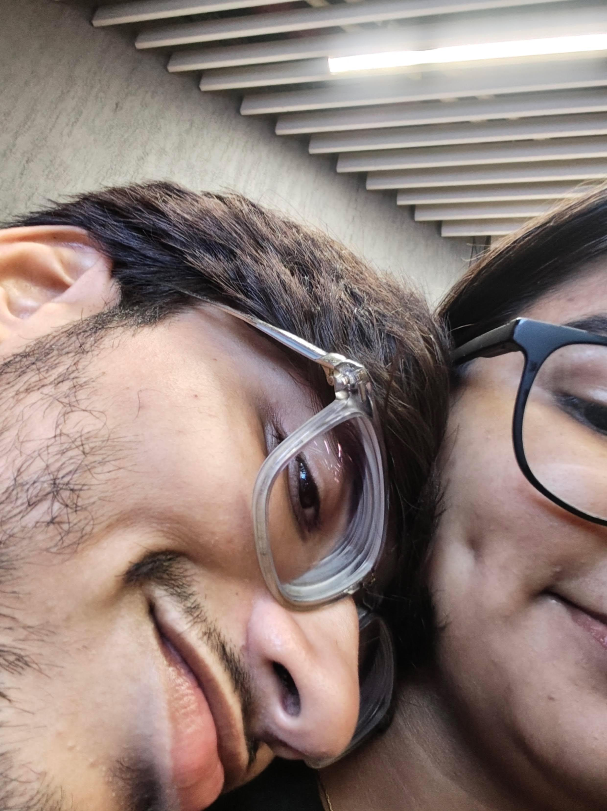
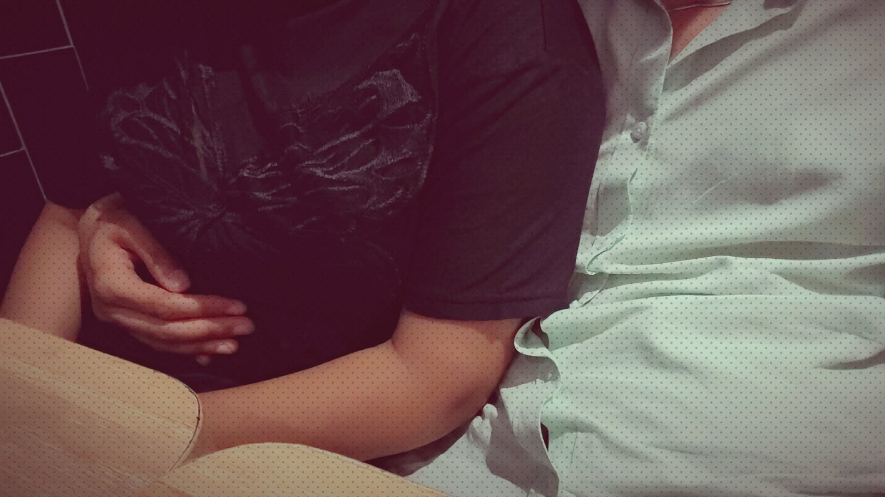
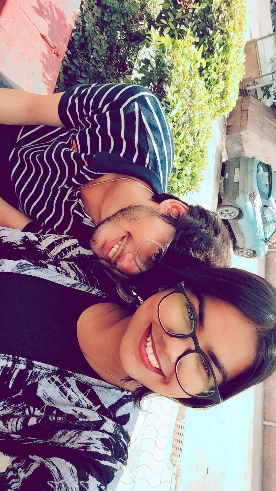
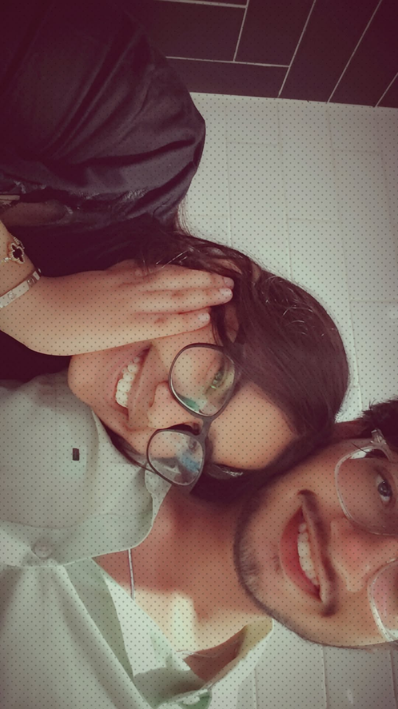

10 SEPT
The beginning.
One random beginning. A lot of conversations. And somehow, you became someone I started looking forward to every day.
10 SEPTEMBER 2026
I had absolutely no idea where those conversations would take us.

10 SEPT
One random beginning. A lot of conversations. And somehow, you became someone I started looking forward to every day.

21 SEPT
1:30 PM to 5:10 PM. We walked, ate, laughed, smoked, talked about our lives and judged people together like we'd been doing it forever.
And yes... my first ever chai was with you. ☕

23 SEPT
We went to the cinema and somehow the movie became background noise because we were too busy talking about ourselves.

25 SEPT
Somehow fifteen days felt like so much more. The bond was getting stronger, the feelings were getting real, and neither of us was pretending otherwise anymore.

30 SEPT
You stepped into my home and we spent the whole day together. The space between us disappeared, replaced by hugs, closeness, laughter and kisses that made the whole day feel like it belonged only to us.
One of those days you don't really need a photograph to remember.

1 OCT
Things got heavy. For a moment, it felt like everything we'd built could slip away. But I didn't hold you loose. I didn't want to give up on us when things became difficult.
Sometimes loving someone also means holding on when the easy thing would be to let go.

2 OCT
We went to Deer Park, Hauz Khas. We talked about everything. We listened. We understood. We sorted things out.
“We kissed our souls.”
And somehow, after all the noise, it was just us again.
You can somehow make everything feel a little quieter.
Five minutes of calm. Five minutes of chaos. Somehow I love both.
You feel things deeply, even when you don't know how to say them.
The conversations that start nowhere and somehow become everything.
03 · SOMETHING I WANT YOU TO KNOW
You don't have to hide your problems.
You don't have to be perfect around me.
You can overthink.
You can be emotional.
You can tell me when you're scared.
I'll still be here.
I don't just want the easy days with you. I want the real ones too.
04 · ONE LAST QUESTION
We've laughed. We've fought. We've talked. We've gotten closer. We've found our way back.
Not because everything is perfect. Because I want to keep choosing you, learning you, and building this with you.
Choose carefully. 👀